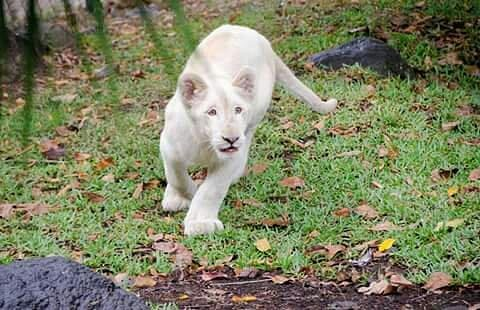

Cabecera: Santa Tecla
La Libertad es un departamento de El Salvador. Su capital es la ciudad de Santa Tecla, capital también del municipio homónimo.
población
una población de 121,908 habitantes (censo oficial, 2007).
Historia
Esta zona fue mencionada por el religioso Pedro Cortés y Larraz el año 1770, como la "hacienda Tepehaua", una de las más importantes de la parroquia de San Jacinto. De hecho, la región era conocida como "rada de Tepehaua", antes de ser habilitada por el Congreso de la República Federal de Centro América como Puerto de La Libertad el 24 de febrero de 1824. El mismo parlamento lo autorizó para el comercio exterior en el litoral del océano Pacífico en 1831. El primer buque de vapor arribó el 7 de junio de 1857.
El 19 de julio de 1858, la localidad fue erigida como pueblo por Decreto Ejecutivo, siendo aprobado por el congreso el 11 de febrero del siguiente año. Su erección como municipio se debió a la excesiva dependencia de Huizúcar, que se localizada a una distancia considerable, y a la cual se comunicaba por caminos en mal estado.
Pasó a formar parte del departamento de La Libertad el 28 de enero de 1865, y para 1869 tenía una población de 266 habitantes. El 4 de mayo de 1867, el gobierno salvadoreño realizó el contrato para la construcción de un muelle de hierro que fue inaugurado el 7 de octubre de 1869. Antes de esa fecha el desembarco se hacía por lanchones asegurados con andarivel. Asimismo, la línea telegráfica entre San Salvador y el puerto fue inaugurada el 27 de abril de 1870. Obtuvo el título de villa el 10 de marzo de 1874, y el de ciudad el 23 de agosto de 1957.
Municipios
La Libertad cuenta con 22 municipios
1. Antiguo Cuscatlán
2. Chiltiupán
3. Ciudad Arce
4. Colón
5. Comasagua
6. Huizúcar
7. Jayaque
8. Jicalapa
9. La Libertad

10. Santa Tecla
11. Nuevo Cuscatlán
12. San Juan Opico
13. Quezaltepeque
14. Sacacoyo
15. San José Villanueva
16. San Matías
17. San Pablo Tacachico
18. Talnique
19. Tamanique
20. Teotepeque
21. Tepecoyo
22. Zaragoza
Extensión Territorial
Destacan en el departamento los ríos Lempa (19.5 km) y el Sucio (32,5 km); La laguna de Chanmico con un área de 0,78 km2 y el volcán de San Salvador o Quezaltepeque con una elevación de 1 959 msnm. Tiene una extensión territorial de 112 km².
Turismo
El departamento de la Libertad consta con la mayoría de las mejores playas de todo el país, ya sean para disfrutar nadando o practicando algún deporte extremo acuático como el surf, windsurf, kayaking, etc.
El municipio de La Libertad, consta de 16 playas:
Playa Mizata
Playa La Perla
Playa El Palmarcito
Playa Km 59
Playa El Zonte
Playa El Tunco
Playa El Sunzal
Playa Río Grande, La Bocana
Playa El Majahual
Playa San Blas
Playa Conchalio
Playa Punta Roca
Playa La Paz
Playa El Obispo
Playa Las Flores
Playa San Diego
Las playas de El Salvador cuentan con el tercer lugar en la escala mundial de los mejores puntos para surfear, y se han realizado ya alrededor de seis campeonatos a nivel mundial en las playas del departamento de La Libertad.
Cultura
El municipio celebra sus fiestas patronales en el mes de diciembre en honor al Niño Jesús.
Gastronomía
Debido a su ubicación costera, en La Libertad abundan los platillos basados en frutos frescos del mar, principalmente los mariscos.
El Puerto de La Libertad es famoso por gastronomía basada en pescados y mariscos. Entre los platillos típicos están los cócteles de camarón, de conchas, ceviches de pescado, caracol y las ostras frescas. También son famosas las mariscadas y los pescados cocinados al gusto del comensal.
La Plaza Gastronómica, ubicada en el conocido Malecón de La Libertad, cuenta con más de 15 restaurantes y es allí donde se celebra anualmente el Festival Gastronómico, donde cada restaurante ofrece lo mejor de su menú. Además en la zona del muelle se pueden adquirir pescados y mariscos frescos, ya sea en el mercado de marisco o directamente en una de las lanchas que trae la pesca del día.
También puedes recorrer los diversos restaurantes del municipio, entre los que destacan el Taco Guanaco, Beto's Restaurant, AST La Terraza y La Curva de Don Gere.